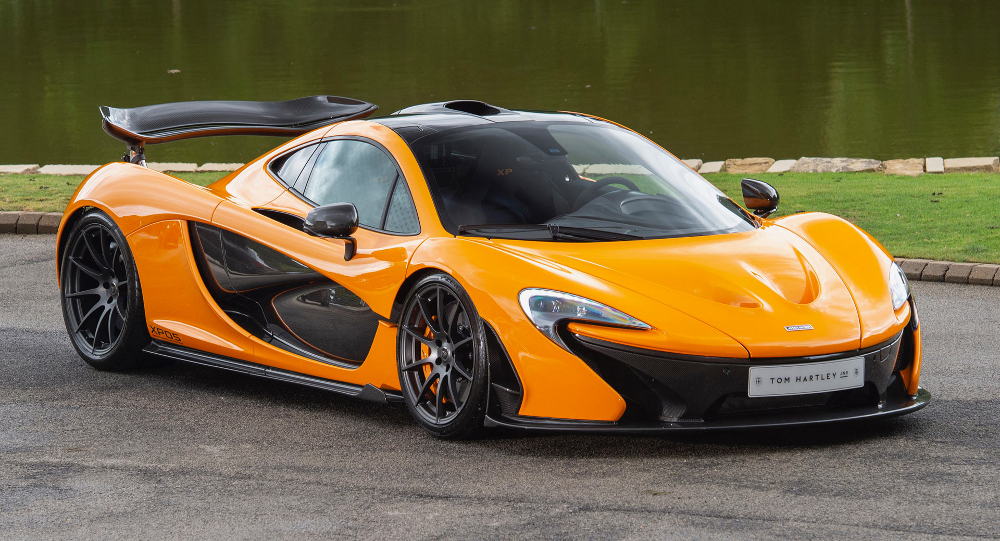

McLaren fue fundada en 1963 por el piloto neozelandés Bruce McLaren en Inglaterra. Comenzó como un equipo de Fórmula 1 y rápidamente ganó reconocimiento por su innovación y éxito en las pistas. En 1992, la marca lanzó el McLaren F1, uno de los superdeportivos más icónicos de la historia. Hoy, McLaren Automotive crea autos de lujo de alto rendimiento como el 720S y el Artura, mezclando tecnología de competición con diseño futurista y precisión británica.
A continuación verás un TOP 3 de los autos más rápidos de McLaren :)
I. McLaren P1
- Motor: V8 3.8L biturbo + motor eléctrico (híbrido enchufable)
- Potencia combinada: 903 hp
- 0–100 km/h: 2.8 segundos
- Velocidad máxima: 350 km/h (limitada electrónicamente)
- Tracción: Trasera (RWD)
- Producción: 375 unidades (edición limitada)
- Características clave: Hiperauto híbrido pionero. Aerodinámica activa, tecnología de F1, enfoque brutal en pista y conducción extrema.

II. McLaren 765LT
- Motor: V8 4.0L biturbo
- Potencia: 755 hp (765 PS)
- 0–100 km/h: 2.7 segundos
- Velocidad máxima: 330 km/h
- Peso: ~1,229 kg (muy ligero)
- Características clave: Versión extrema del 720S. Más ligera, más agresiva, escape de titanio, chasis afinado para track days. Una bestia para circuitos.

III. McLaren Artura
- Motor: V6 3.0L biturbo + motor eléctrico (híbrido enchufable)
- Potencia combinada: 671 hp
- 0–100 km/h: 3.0 segundos
- Velocidad máxima: 330 km/h
- Autonomía eléctrica: ~30 km
- Transmisión: 8 velocidades, sin marcha atrás (modo reversa con el motor eléctrico)
- Características clave: Primer McLaren con arquitectura totalmente nueva en más de una década. Balance perfecto entre tecnología, eficiencia y performance.

¿Elegancia? ¿Superioridad? ¿Increíble? = McLaren.